Tokyo Never Sleeps
Discover Tokyo through futuristic skyscrapers, ancient temples, iconic neighborhoods, Japanese cuisine and unforgettable experiences.
Shibuya • Shinjuku • Asakusa • Sushi • Tokyo Skytree
Asakusa, Meiji Shrine, Japanese gardens and centuries-old traditions.
Metro, JR Yamanote Line, Suica card and practical tips for exploring Tokyo.
Shibuya, Tokyo Skytree, teamLab, Sensō-ji and breathtaking viewpoints.
Sumo, Japanese baseball, anime, gaming and events throughout the year.
Tokyo is one of the world's most fascinating cities. From futuristic skyscrapers and centuries-old temples to vibrant neighborhoods and world-famous cuisine, Japan's capital blends tradition and innovation like nowhere else.
From Shibuya and Shinjuku to Asakusa and Ginza, every district offers its own unique atmosphere, with neon lights, peaceful gardens, historic shrines, stylish boutiques and unforgettable cultural experiences.
Whether you're visiting for Japanese cuisine, breathtaking city views, manga culture, cherry blossoms or your very first trip to Japan, Tokyo is a destination unlike any other.
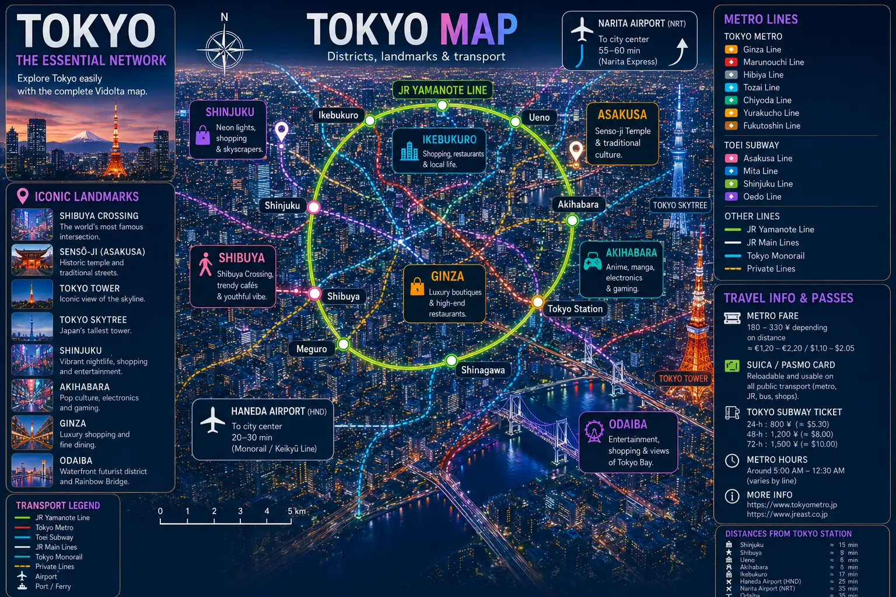
Tokyo isn't just a city to visit—it's a city to experience. From ancient traditions and futuristic technology to incredible Japanese cuisine, JDM culture and breathtaking Mount Fuji views, these unforgettable experiences reveal the very best of Japan's vibrant capital.
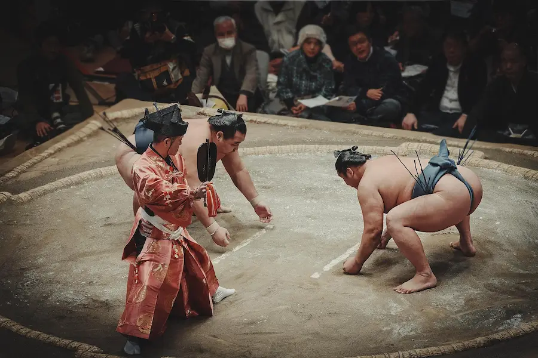
Feel the excitement of Japan's national sport, discover ancient sumo rituals, enjoy a traditional chanko meal and capture unforgettable photos with the wrestlers.
🎟️ Book the Sumo Experience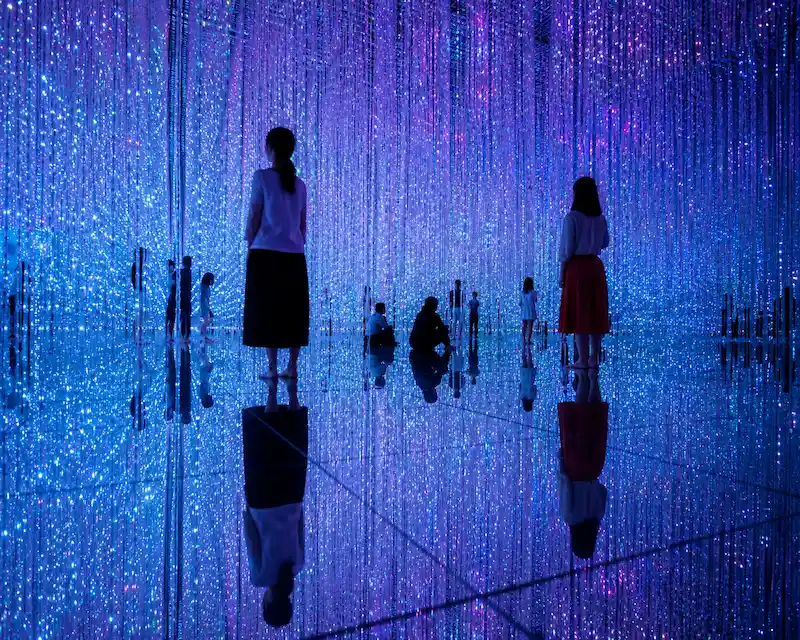
Walk barefoot through immersive digital artworks where light, water and technology combine to create one of Japan's most spectacular art experiences.
🎟️ Book teamLab Planets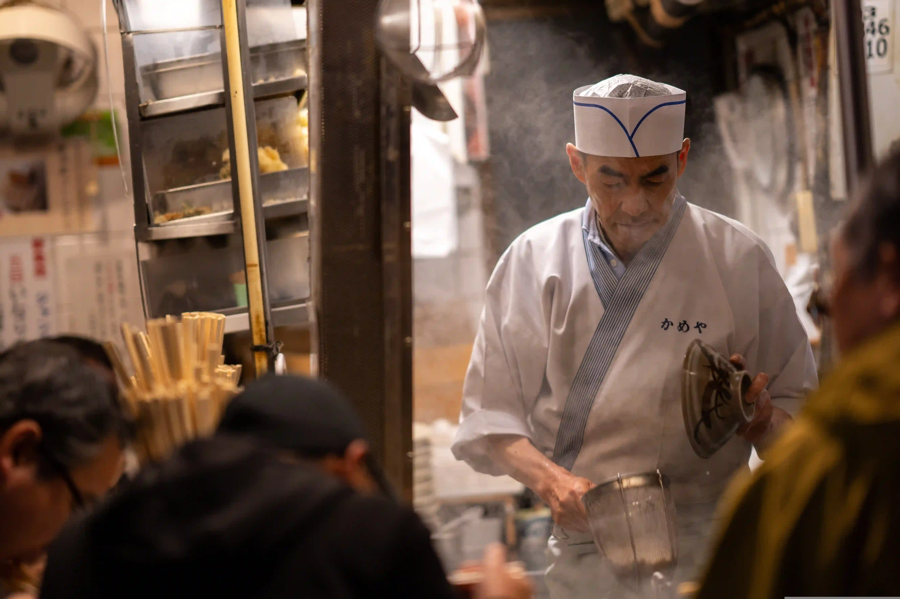
Explore the lively backstreets of Shinjuku while tasting steaming ramen, grilled yakitori and authentic Japanese specialties in some of the district's best izakayas.
Discover the Food Tour →Ride in a real Japanese sports car driven by passionate enthusiasts, cruise along the legendary Wangan and C1 Loop highways, discover Daikoku PA, visit A-PIT Autobacs and admire Tokyo Tower during an unforgettable immersion into Japan's automotive culture.
Book the JDM Experience →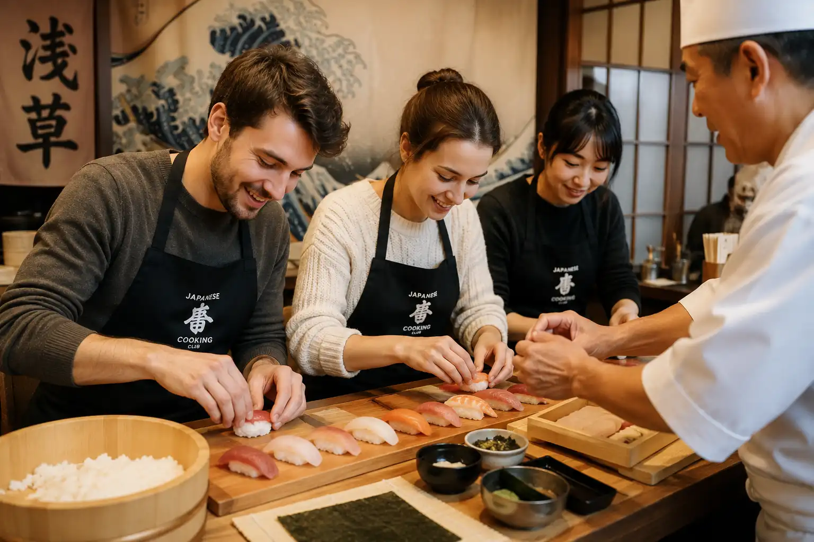
Learn how to prepare authentic Japanese sushi during a hands-on workshop in Asakusa. Guided by expert instructors, discover traditional techniques before enjoying your own creations in historic Tokyo.
Book the Workshop →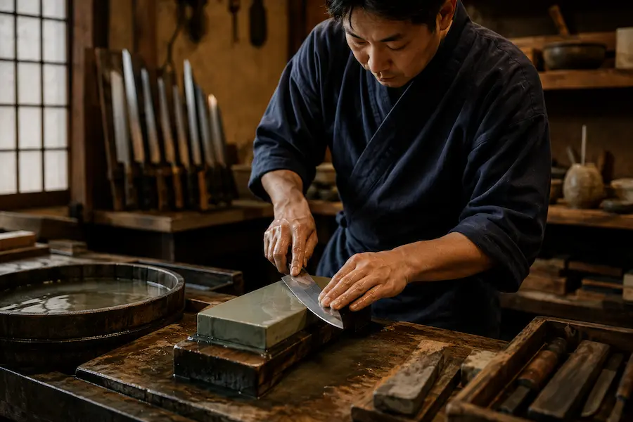
Discover the craftsmanship of Japanese artisans during a workshop where you'll sharpen, engrave and personalize your very own knife before taking it home.
Join the Workshop →Enjoy unlimited travel on the Tokyo Metro and Toei Subway networks with the official pass, perfect for exploring the city's main neighborhoods.
Book the Metro Pass →Stay connected from the moment you arrive with an eSIM, giving you easy access to maps, public transport and all the essential travel apps.
View eSIMs →Easily visit Kyoto, Osaka, Hiroshima and many other destinations with the Japan Rail Pass, offering unlimited travel on the famous Shinkansen bullet trains and most JR lines.
Discover the Japan Rail Pass →From the narrow alleys of Omoide Yokocho to traditional izakayas, the neon lights of Kabukichō and its vibrant nightlife, Shinjuku perfectly captures the Tokyo that never sleeps.
Perfect for a first visit. Home to the famous crossing, trendy shops, cafés and rooftop bars, Shibuya is the beating heart of modern Tokyo.
The best neighborhood to experience traditional Tokyo, with Sensō-ji Temple, historic streets and a more peaceful atmosphere.
Tokyo's luxury district, featuring upscale hotels, premium shopping, renowned restaurants and excellent metro connections.
An excellent choice for travelers seeking a quieter area close to museums, parks and outstanding public transport.
Compare hotels across Tokyo's most popular neighborhoods and find the perfect accommodation for your budget and travel style.
From traditional sushi counters and lively izakayas to bustling markets and Michelin-starred restaurants, Tokyo is one of the world's greatest culinary capitals.
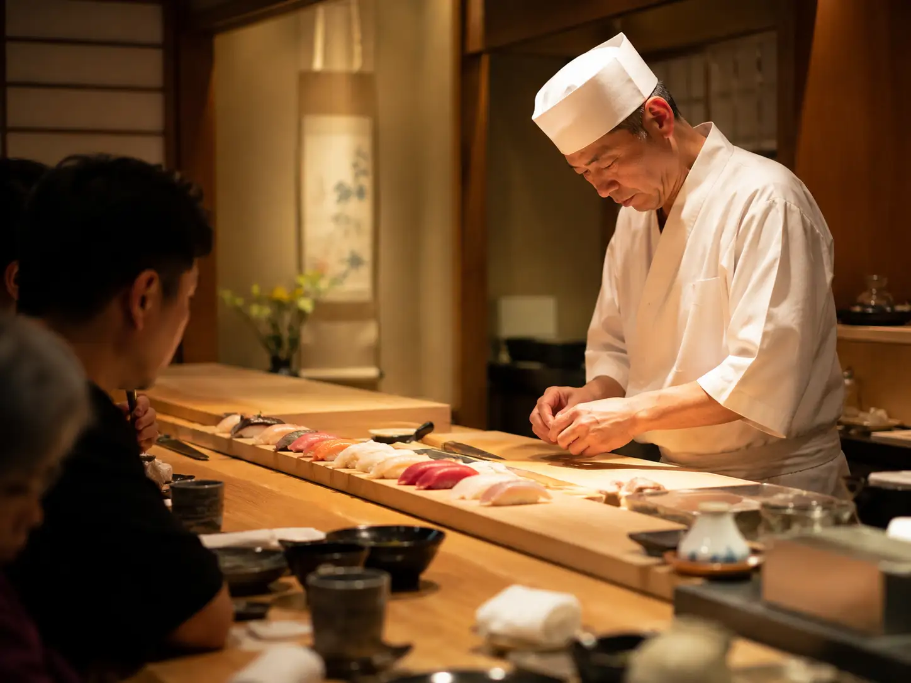
Sit at the counter of a sushi restaurant to watch master chefs at work while enjoying seafood of exceptional freshness.
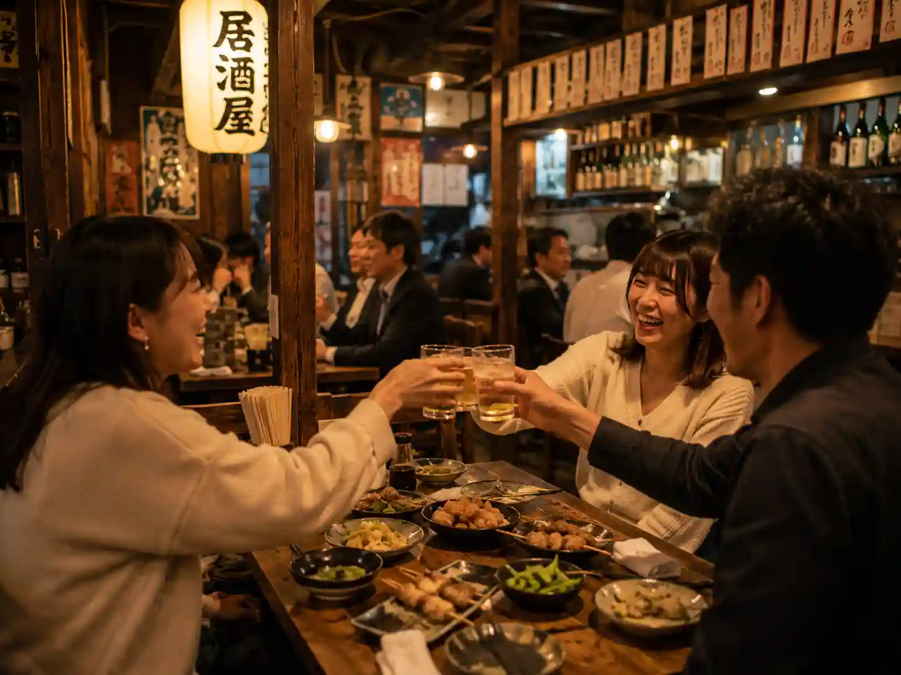
These lively pub-style restaurants are perfect for sharing yakitori, gyoza, karaage and local specialties in a relaxed atmosphere after a day of sightseeing.
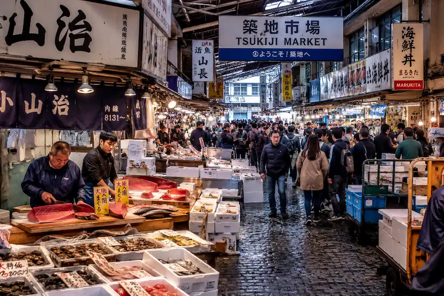
Tsukiji remains one of Japan's top culinary destinations, famous for its fresh seafood, early-morning sushi and vibrant food stalls.
From breathtaking viewpoints and historic temples to futuristic neighborhoods and unforgettable experiences, Tokyo offers an incredible variety of attractions for every traveler.
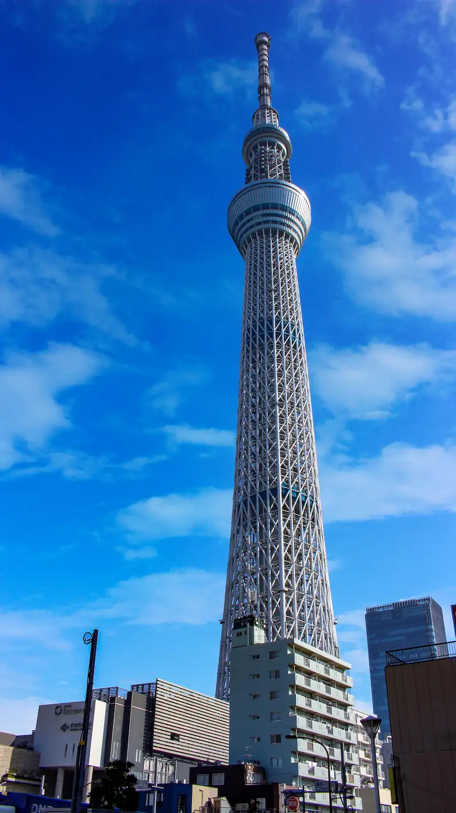
Standing 634 meters tall, Tokyo Skytree offers one of the most spectacular panoramic views over the Japanese capital and, on clear days, even Mount Fuji.
Book Tickets →The world's most famous pedestrian crossing perfectly captures Tokyo's energy, with thousands of people crossing from every direction each time the lights change.
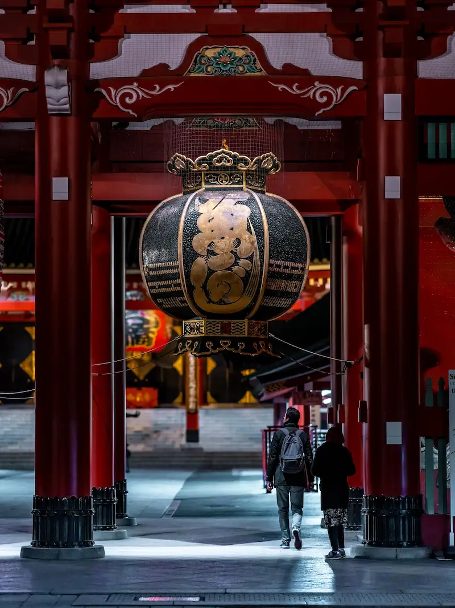
Located in Asakusa, Sensō-ji is Tokyo's oldest Buddhist temple and one of the city's most iconic landmarks.
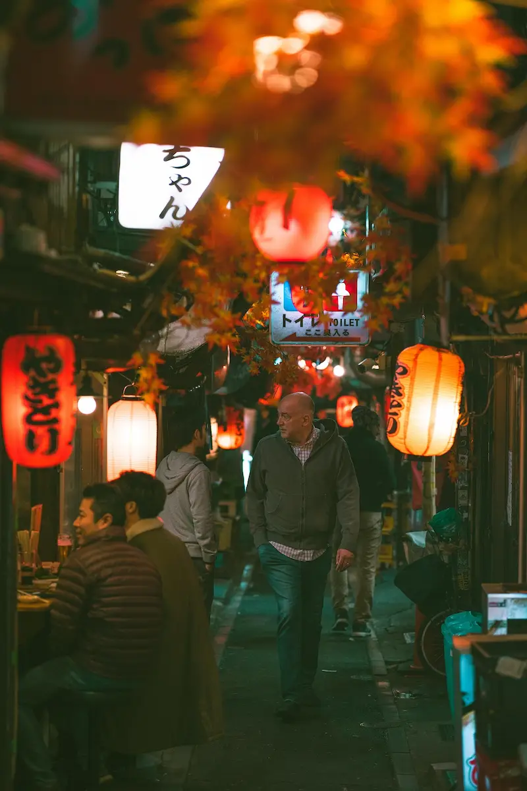
With its towering skyscrapers, the neon lights of Kabukichō, the narrow alleys of Omoide Yokocho and spectacular observation decks, Shinjuku showcases the vibrant spirit of Tokyo.
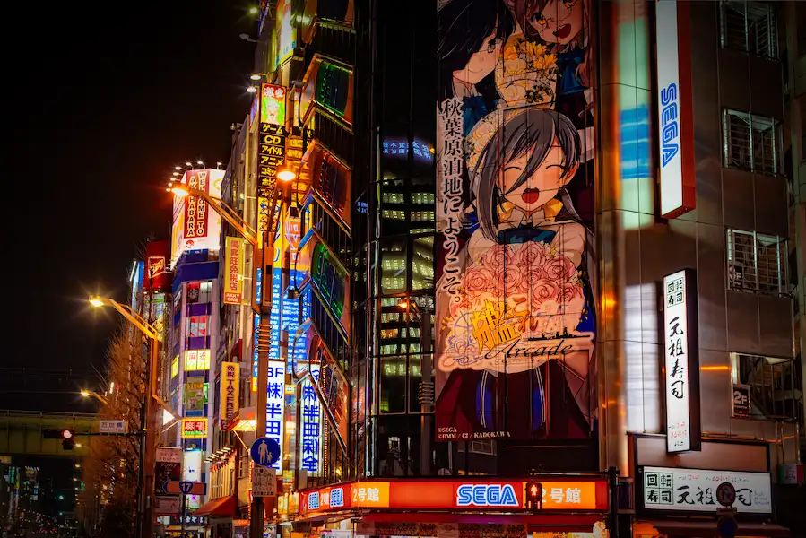
The ultimate destination for manga, anime, gaming and technology enthusiasts, packed with iconic stores and legendary arcades.
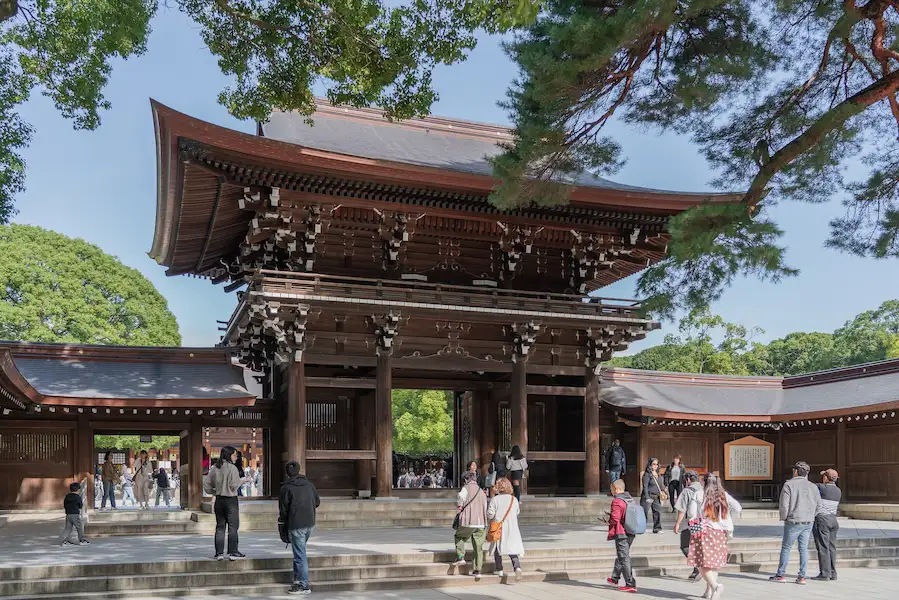
Surrounded by a peaceful forest in the heart of Tokyo, this Shinto shrine provides a striking contrast to the city's bustling streets.
Beyond its temples and skyscrapers, Tokyo boasts an exciting sports and cultural scene, from Japanese baseball and sumo to football, martial arts, concerts and pop culture events.
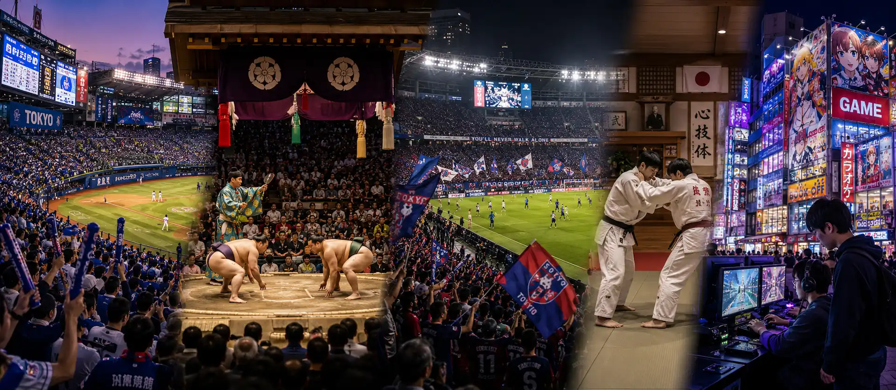
Watching a baseball game is one of Japan's most popular experiences, with passionate fans, lively chants and an unforgettable atmosphere in Tokyo's stadiums.
View the Baseball ExperienceAttend an authentic sumo tournament to experience the rituals, traditions and intensity of Japan's iconic national sport in the historic Ryōgoku district.
View the Official Sumo TournamentJ.League matches reveal another side of Japanese sports, with a passionate yet family-friendly atmosphere unlike Europe's biggest stadiums.
View the Football ExperienceJoin a local guide through Akihabara to discover anime, manga, retro arcades, specialty stores and the famous Maid Cafés that have made Tokyo a global geek capital.
Discover AkihabaraLess than two hours from Tokyo, you'll find some of Japan's most rewarding day trips. From Mount Fuji and the volcanic landscapes of Hakone to historic temples and traditional towns, these destinations perfectly complement a stay in the Japanese capital.
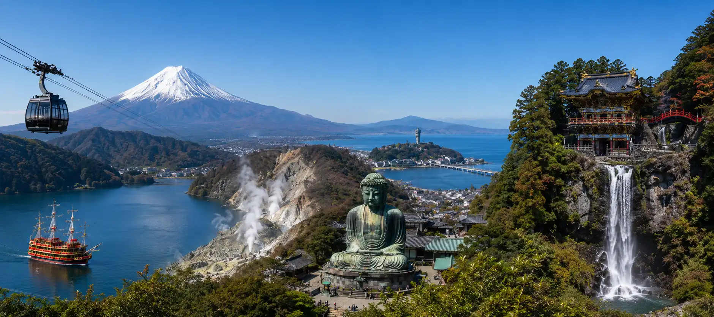
Admire Mount Fuji, cruise across Lake Ashi, ride the Hakone Ropeway and discover the volcanic valley of Owakudani on one of the most spectacular excursions from Tokyo.
Book the Tour →Explore Kamakura's historic temples, admire the famous Great Buddha and continue to Enoshima Island for stunning views over Sagami Bay and, on clear days, Mount Fuji.
Book the Tour →Visit UNESCO World Heritage shrines, admire the spectacular Kegon Falls and enjoy the peaceful scenery of Lake Chuzenji during a perfect blend of history and nature.
Book the Tour →Stroll along the Minato Mirai waterfront, explore Japan's largest Chinatown and enjoy a refreshing escape just 30 minutes from central Tokyo.
Tokyo's transport network is vast. Plan which neighborhoods you want to visit in advance to optimize your routes and avoid spending too much time commuting.
Tokyo is one of the world's largest cities. It's far more enjoyable to dedicate a full day to each major district than to spend all day rushing between attractions.
teamLab Planets, Mount Fuji tours and experiences such as sumo frequently sell out. Booking several days in advance is highly recommended.
Credit cards are widely accepted, but many small restaurants, temples, markets and some ticket machines still prefer or require cash.
Speaking quietly on public transport, queuing patiently, respecting public spaces and taking your rubbish with you are all part of everyday life in Japan.
Japanese is the official language. English is commonly used in tourist areas, major train stations and hotels, but learning a few Japanese words is always appreciated.
The local currency is the Japanese yen (¥). Credit cards are widely accepted, but carrying some cash remains useful.
Japan mainly uses Type A and Type B plugs with a 100V power supply. European travelers will need a power adapter.
Four to five days are enough to discover Tokyo's main neighborhoods. A full week is ideal if you also plan a day trip to Mount Fuji.
Spring, during the cherry blossom season, and autumn, with its spectacular red and golden foliage, are the most popular times to visit Tokyo.
Plan on spending around €120 to €250 per day for a comfortable trip, depending on your accommodation, restaurants, transportation and chosen activities.
Four to five days are enough to discover the main neighborhoods, temples, viewpoints and must-do experiences. A full week is ideal if you want to explore Tokyo more slowly and plan a day trip to Mount Fuji or Kamakura.
Shinjuku and Shibuya are the best choices for a first trip thanks to their excellent transport connections, wide range of hotels and restaurants, and easy access to Tokyo's main attractions.
Yes. Signs are usually translated into English and the main attractions are easy to navigate for international travelers. Still, learning a few Japanese words is always appreciated.
Yes. Tokyo is famous for offering excellent food at every price point. You can easily find quality ramen, sushi, Japanese curry or donburi for under €15.
Yes. teamLab Planets, Mount Fuji tours, sumo experiences and several observation decks often sell out, especially during holidays and cherry blossom season.
Tokyo Metro, Toei Subway and the JR Yamanote Line make it easy to reach the main neighborhoods. A Suica, Pasmo or metro pass makes getting around even smoother.
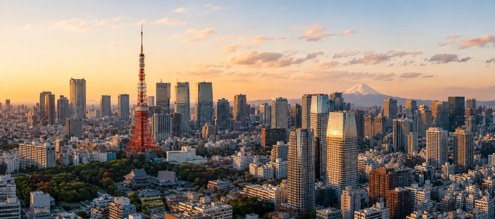